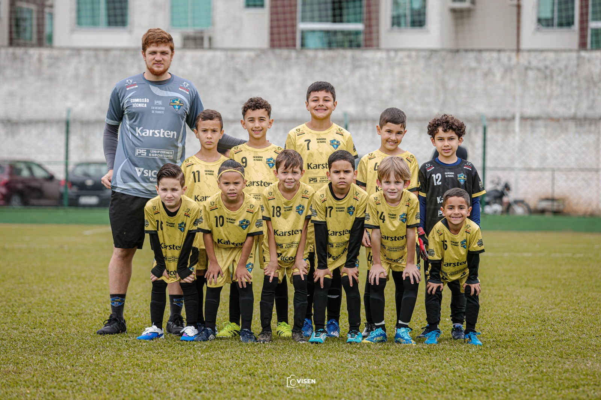
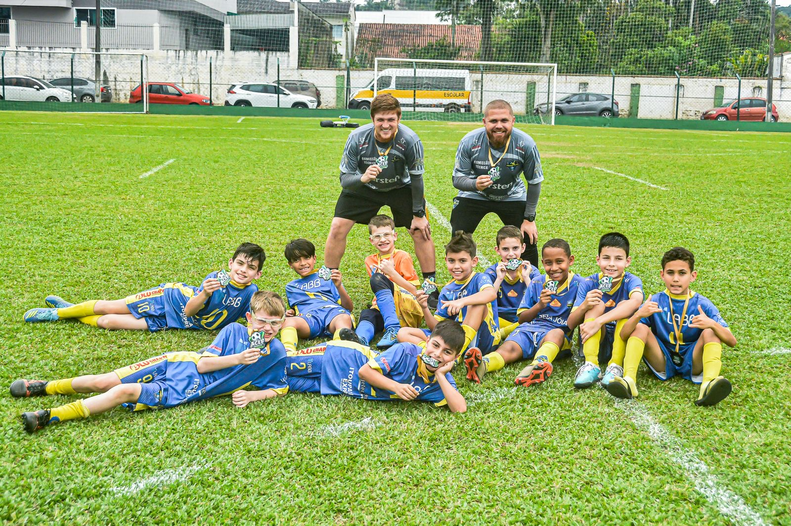
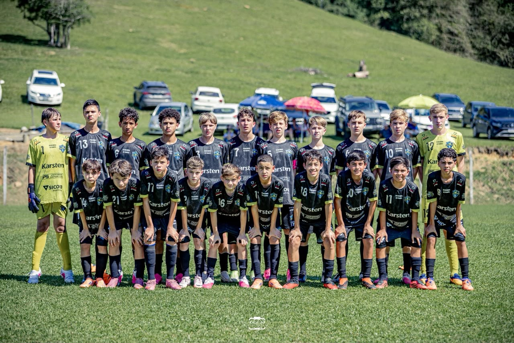
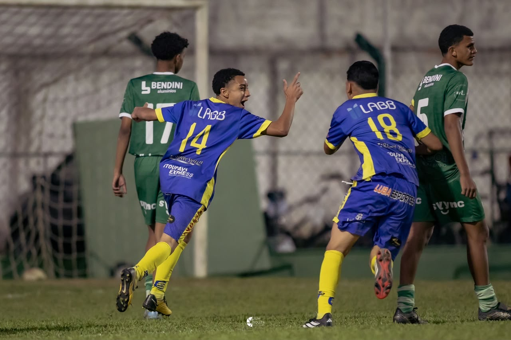
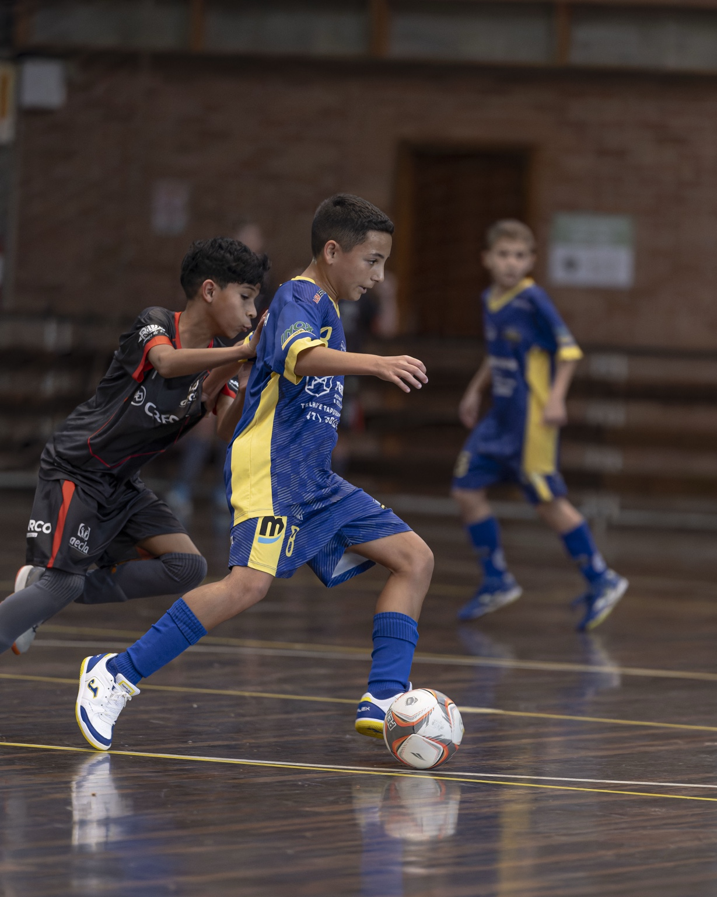
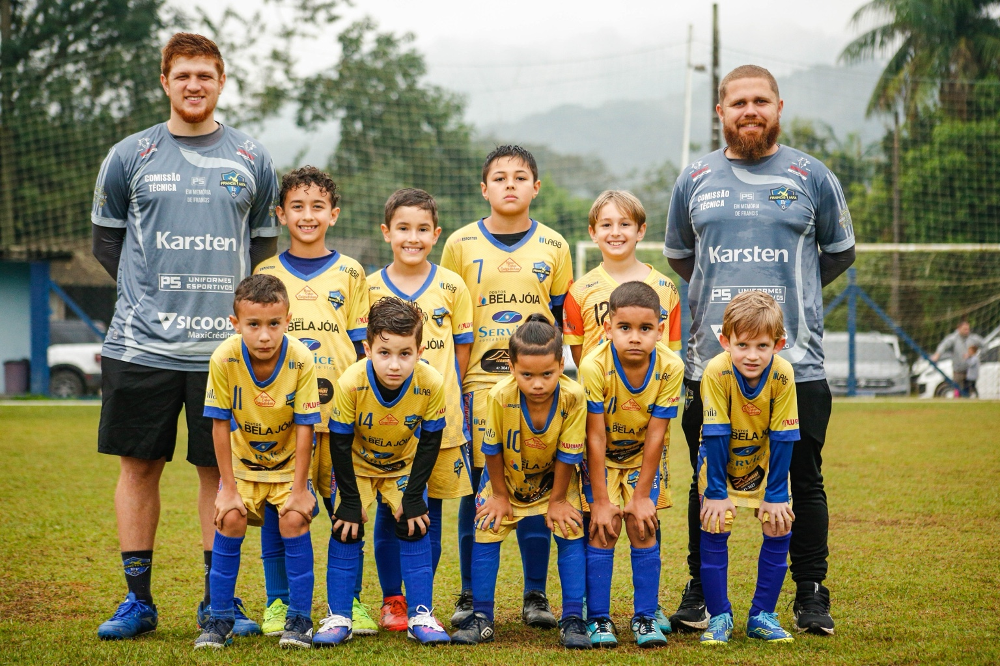
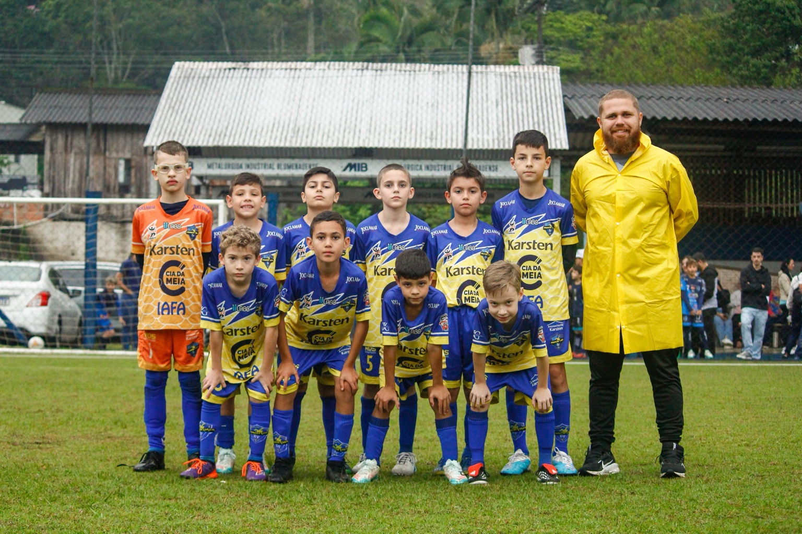
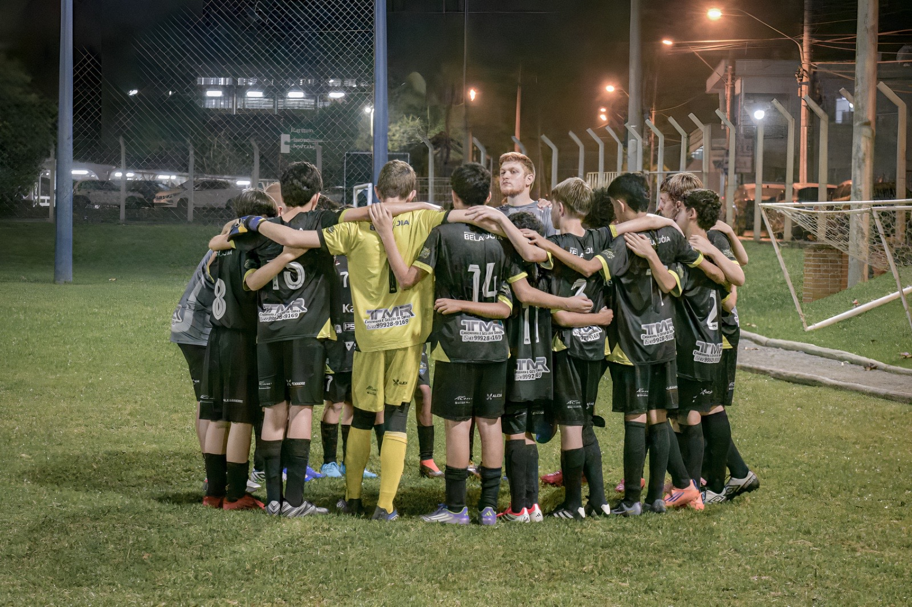
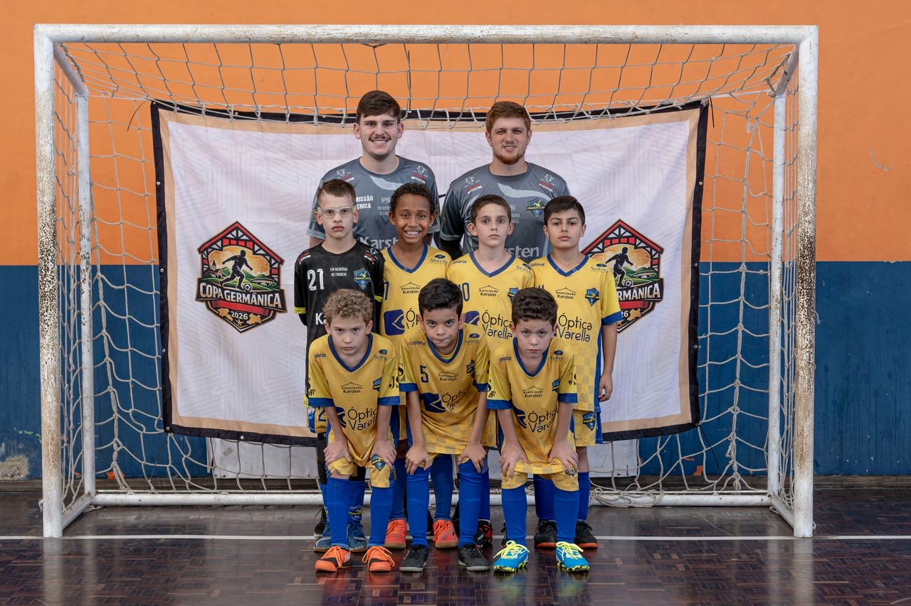

Copa São Ludgero · 2026
Francis IAFA conquista título no Sub-11
A equipe Sub-11 da Francis IAFA terminou a competição como campeã da Série Bronze da 9ª Copa São Ludgero de Futebol de Base.
Campeão · Série Bronze · Sub-11Desde 2010, o futebol é o caminho para desenvolver atletas, criar oportunidades e contribuir para a formação de crianças e adolescentes.
Conheça a IAFA Entre em contatoA Escola de Futebol Francis IAFA foi fundada em 2010 por Francis, profissional de Educação Física, ex-atleta profissional e apaixonado pela formação esportiva.
Formado em Licenciatura Plena em Educação Física pela FURB e registrado no CREF 003694-G/SC, Francis dedicou sua trajetória ao desenvolvimento de atletas e ao trabalho com o futebol de base.
Após seu falecimento, em setembro de 2025, a escola passou a carregar ainda mais forte o compromisso de preservar sua história e dar continuidade ao projeto que ele construiu.
O trabalho iniciado por Francis segue através de cada treino, cada jogo, cada equipe e cada criança que encontra no futebol uma oportunidade de aprender e crescer.
A formação esportiva faz parte de um processo maior. Na IAFA, o treinamento é também um espaço de desenvolvimento, convivência, disciplina e aprendizado.
Desenvolvimento progressivo respeitando a idade e o estágio de cada atleta.
Compromisso com treinos, jogos, horários e responsabilidades.
Valorização dos colegas, adversários, professores, famílias e do ambiente esportivo.
Experiência competitiva como parte do processo de desenvolvimento esportivo.
Confira os horários oficiais dos grupos da Francis IAFA para 2026. A programação está organizada por modalidade, nível e ano de nascimento.
Francis IAFA · 2026
| Dia | Horário | Ano(s) |
|---|---|---|
| Segunda | 14h15 | 2013 |
| Segunda | 16h15 | 2014 |
| Terça | 14h30 | 2012 / 2011 / 2010 |
| Terça | 18h | 2015 / 2016 |
| Quarta | 14h15 | 2014 |
| Quarta | 16h15 | 2013 |
| Quarta | 18h | 2015 / 2016 |
| Quinta | 14h30 | 2012 / 2011 / 2010 |
| Quinta | 18h | 2015 / 2016 |
| Sexta | 14h30 | 2012 / 2011 / 2010 |
| Sexta | 16h15 | 2013 / 2014 |
Francis IAFA · 2026
| Dia | Horário | Ano(s) |
|---|---|---|
| Segunda | 14h15 | 2014 / 2015 |
| Segunda | 16h | 2013 / 2012 |
| Quarta | 14h15 | 2013 / 2012 |
| Quarta | 16h | 2014 / 2015 |
Francis IAFA · 2026
| Dia | Horário | Ano(s) |
|---|---|---|
| Segunda | 17h15 | 2019 / 2020 |
| Terça | 17h45 | 2016 / 2017 / 2018 |
| Terça | 18h15 | 2015 / 2013 |
| Quarta | 17h15 | 2019 / 2020 |
| Quinta | 17h45 | 2016 / 2017 / 2018 |
| Quinta | 18h15 | 2015 / 2013 |
Primeiro contato e desenvolvimento das capacidades motoras, técnicas e sociais por meio do futebol.
Treinos estruturados para atletas que participam de competições e buscam evolução técnica e tática.
Experiências em diferentes ambientes e formatos de jogo para ampliar as possibilidades de desenvolvimento.
A participação em torneios faz parte da trajetória das equipes, proporcionando experiências esportivas, desafios e convivência com diferentes escolas e clubes.
Acompanhe alguns resultados e conquistas recentes das equipes Francis IAFA em competições de futebol e futsal.
A equipe Sub-11 da Francis IAFA terminou a competição como campeã da Série Bronze da 9ª Copa São Ludgero de Futebol de Base.
Campeão · Série Bronze · Sub-11Na segunda rodada da Copa ACEF, a Francis IAFA venceu o Coxa Itapoá por 3 a 0, no Estádio Karsten, em Blumenau.
Francis IAFA 3 × 0 Coxa ItapoáNa Copa Dipil de Futsal Menor, o Sub-11 da Francis IAFA venceu o Rodeio Futsal por 1 a 0 nas oitavas e avançou às quartas de final.
Rodeio Futsal 0 × 1 Francis IAFAResultados conferidos em fontes públicas das competições. A seção pode receber novas notícias, fotos e resultados conforme a temporada avança.
Uma escola que preserva sua história enquanto continua formando novas gerações através do esporte.
Treinos, competições, equipes e momentos que fazem parte da nossa história.









Confira os canais oficiais da IAFA e a localização informada para os treinos de futsal de iniciação.
Local dos treinos de futsal de iniciação: na rua ao lado da Associação da Karsten, em Blumenau/SC.
Abrir localização no Google Maps →WhatsApp: (47) 99967-8848
Instagram: @francis.iafa
Entre em contato para conhecer as categorias, horários de treinamento e informações para uma aula experimental.
Falar com a IAFA Instagram